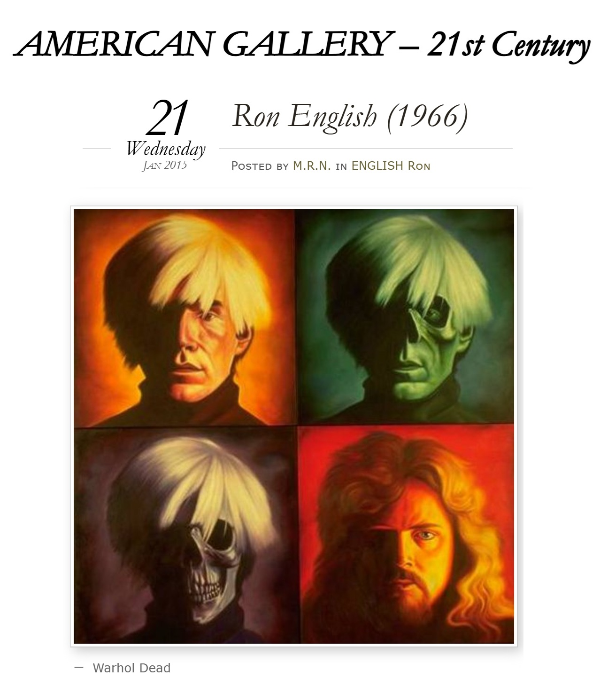
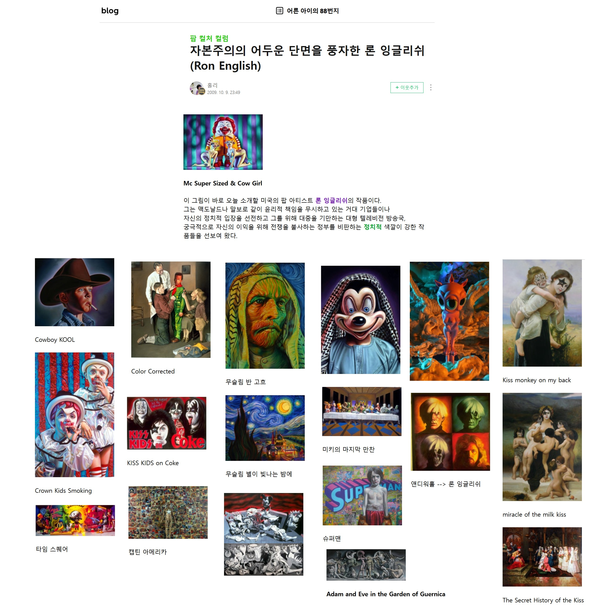

Exhibitions
Revisionist Modernism, The Museum of Contemporary Art, Washington, DC, US, December 2, 1994–January 1, 1995.


Literature

David Jenison, “Ron English,” Happy Magazine, August 2001.

“Artist Ron English, The Man Behind Abraham Obama, is King of Art Flip,” Loyal K.N.G., February 21, 2009. Online.

“Ron English & Gale Fulton Ross,” The Georgetowner, Art Page, December 9, 1994, p. 6.

Sally Deering, “Portrait of an Artist on a Rock Album,” The Jersey Journal - Tempo, November 10–16, 1995.

Victor Forbes, “Riding That Ron English Train,” SunStorm Fine Art, 1995, p. 10.

“Ron English: A One-Man POPaganda Machine,” Juxtapoz Magazine, November–December 2002, p. 65 (panel 3 only).

Danny Shot and Jack Wiler, “Long Shot,” Long Shot, vol. 15, 1993.

Karen Charman, “English 101 - Fuck art, let’s dance!,” Cover, September 1994, p. 36.


“Ron English - Art Crimes,” Internet Graphics Gallery, undated, p. 229.

“Ron English’s ‘POPaganda’ Exhibition & Abraham Obama Vinyl Release,” Milk Magazine, December 8, 2008.

“VARIOUS ARTISTS / English 101 / Unkulunkie Records (615-397-4957),” The Aquarian Weekly, October 26, 1994.
Provenance
Collection of the artist.
Notes
This work consists of four individual panels, catalogued as RE-000196-A, RE-000196-B, RE-000196-C, and RE-000196-D.
Ancillary Documentation





Additional Online Circulation
Selected examples of the work’s online circulation, reproduction, or discussion. This list is not exhaustive; it is intended to document representative appearances of the image beyond formal exhibition and publication records.